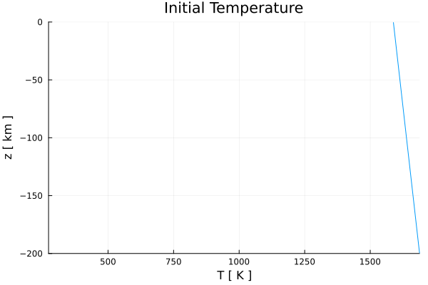
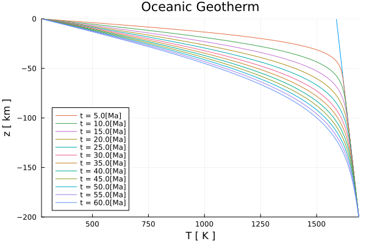
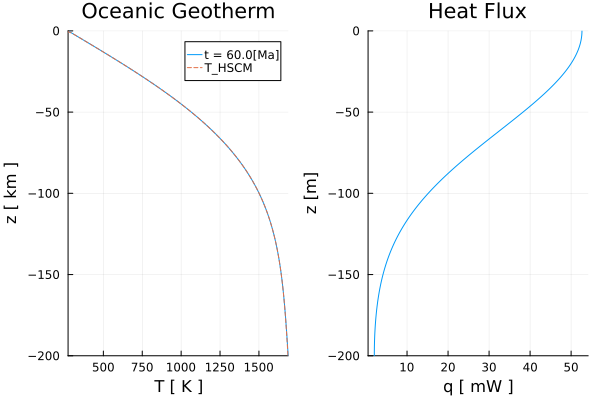

Oceanic Geotherm
The 1-D temperature profile of an oceanic geotherm can be calculated by solving the conductive part of the 1-D temperature conservation equation using variable thermal parameters with a conservative finite difference scheme (so far only including a radiogenic heat source). For the sake of continuity, we use the 1-D solver for variable thermal parameters, even though a constant thermal conductivity is assumed in this example.
In a conservative finite difference scheme for 1-D conduction, temperature is defined at the centroids, while vertical heat flux $q_y$ and thermal conductivity $k$ are defined at the vertices.
The 1-D temperature equation is given by:
\[\begin{equation} \rho c_{p} \frac{\partial{T}}{\partial{t}} = \frac{\partial{q_y}}{\partial{y}} + \rho H, \end{equation}\]
where the heat flux is defined as:
\[\begin{equation} \left. q_{y,m} = -k_m \frac{\partial T}{\partial y}\right\vert_{m},\ \textrm{for}\ m = 1:nv, \end{equation}\]
where $\rho$, $c_{p}$, $T$, $t$, $k$, $H$, $y$, and $nv$ denote the density [kg/m³], the specific heat capacity [J/kg/K], the temperature [K], the time [s], the thermal conductivity [W/m/K], the heat generation rate per mass [W/kg], the depth [m], and the number of vertices, respectively.
For more details on how to discretize the equation using an explicit, forward Euler finite difference scheme, please see the documentation.
First, one needs to load the required packages:
using Plots, SpecialFunctions
using GeoModBox.HeatEquation.OneDLet's start with the definition of the geometrical, numerical, and physical constants:
# Constants --------------------------------------------------------- #
H = 200e3 # Hight of the model [ m ]
nc = 200 # Number of central grid points
Δy = H/nc # Grid resolution
# Depth ---
yc = LinRange(-H + Δy/2.0,0.0 - Δy/2.0,nc)
yv = LinRange(-H,0,nc+1)
Py = (
ρm = 3000, # Density [ kg/m^3 ]
cpm = 1000, # Heat capacity [ J/kg/K ]
km = 3.0, # Conductivity [ W/m/K ]
HM = 0, # Heat generation rate [W/kg]; Q = ρ*H0
)
# ------------------------------------------------------------------- #In the following, one needs to define the initial and boundary condition:
- Temperature at the surface and bottom.
- Linear increasing temperature profile assuming a certain adiabatic gradient and potential mantle temperature.
# Initial Condition ------------------------------------------------- #
T = (
Tpot = 1315 + 273.15, # Potential temperautre [ K ]
ΔTadi = 0.5, # Adiabatic temperature gradient [ K/km ]
Ttop = 273.15, # Surface temperature [ K ]
T_ex = zeros(nc+2,1),
)
T1 = (
Tbot = T.Tpot + T.ΔTadi*abs(H/1e3), # Bottom temperature [ K ]
T = T.Tpot .+ abs.(yc./1e3).*T.ΔTadi, # Initial T-profile [ K ]
)
T = merge(T,T1)
Tini = zeros(nc,1)
Tini .= T.T
T.T_ex[2:end-1] .= T.T
# ------------------------------------------------------------------- #Either Dirichlet or Neumann thermal boundary conditions can be applied at the surface and bottom.
# Boundary conditions ----------------------------------------------- #
BC = (
type = (N=:Dirichlet, S=:Dirichlet),
val = (N=T.Ttop[1],S=T.Tbot[1])
)
# If Neumann boundary conditions are choosen, the following values result in the given heatflux for the given thermal conductivity k.
# S = -0.03; # c = -k/q -> 90 mW/m^2
# N = -0.0033; # c = -k/q -> 10 mW/m^2
# ------------------------------------------------------------------- #Next, define the multiplicative factor fac for the diffusion stability criterion for the explicit thermal solver. This factor controls the stability criterion. If fac exceeds 1, the solver becomes unstable.
# Time stability criterion ------------------------------------------ #
fac = 0.8 # Courant criterion
tmax = 60 # Lithosphere age [ Ma ]
tsca = 60*60*24*365.25 # Seconds per year
age = tmax*1e6*tsca # Age in seconds
# ------------------------------------------------------------------- #To verify the initial and boundary conditions by plotting the temperature profile.
# Plot Initial condition -------------------------------------------- #
plotparam = 1
q = plot(Tini,yc./1e3,
label="",
xlabel="T [ K ]", ylabel="z [ km ]",
title="Initial Temperature",
xlim=(T.Ttop,T.Tbot),ylim=(-H/1e3,0))
display(q)
# ------------------------------------------------------------------- #
Figure 1. Initial temperature profile.
Since a thermal solver for variable thermal parameters is used, one needs to expand the scalar to a vector with the dimensions of the number of centroids nc. Additionally, the thermal diffusivity $\kappa$ and initialize the vertical heat flux q need to be defined.
# Setup Fields ------------------------------------------------------ #
Py1 = (
ρ = Py.ρm.*ones(nc,1),
cp = Py.cpm.*ones(nc,1),
k = Py.km.*ones(nc+1,1),
H = Py.HM.*ones(nc,1)
)
Py = merge(Py,Py1)
Py2 = (
# Thermal diffusivity [ m^2/s ]
κ = maximum(Py.k)/minimum(Py.ρ)/minimum(Py.cp),
)
Py = merge(Py,Py2)
T2 = (
q = zeros(nc+1,1),
)
T = merge(T,T2)
# ------------------------------------------------------------------- #Now, one can calculate the time stability criterion.
# Time stability criterion ------------------------------------------ #
Δtexp = Δy^2/2/Py.κ # Stability criterion for explicit
Δt = fac*Δtexp # total time step
nit = ceil(Int64,age/Δt) # Number of iterations
time = zeros(1,nit) # Time array
# ------------------------------------------------------------------- #With all parameters and constants defined, the equation can now be solved the 1-D temperature equation for each time step in a for loop.
The temperature conservation equation is solved via the function ForwardEuler1D!(), which updates the temperature profile T.T for each time step using the extended temperature field T.T_ex, which include the ghost nodes. The temperature profile is plotted for a certain time.
# Calculate 1-D temperature profile --------------------------------- #
count = 1
for i = 1:nit
if i > 1
time[i] = time[i-1] + Δt
elseif time[i] > age
Δt = age - time[i-1]
time[i] = time[i-1] + Δt
end
ForwardEuler1D!(T,Py,Δt,Δy,nc,BC)
if i == nit || abs(time[i]/1e6/tsca - count*5.0) < Δt/1e6/tsca
println(string("i = ",i,", time = ", time[i]/1e6/tsca))
q = plot!(T.T,yc./1e3,
label=string("t = ",ceil(time[i]/1e6/tsca),"[Ma]"),
xlabel="T [ K ]", ylabel="z [ km ]",
title="Oceanic Geotherm",
xlim=(T.Ttop,T.Tbot),ylim=(-H/1e3,0))
display(q)
count = count + 1
end
end
# ------------------------------------------------------------------- #
Figure 2. Evolution of the temperature profile with depth in 5 Ma steps.
For the final time step, a depth profile for the vertical heat flux is calculated. Therefore, one needs to update the temperature at the ghost nodes to calculate the heat flux at the boundary.
# Calculate heaf flow ----------------------------------------------- #
# South ---
T.T_ex[1] = (BC.type.S==:Dirichlet) * (2 * BC.val.S - T.T_ex[2]) +
(BC.type.S==:Neumann) * (T.T_ex[2] - BC.val.S*Δy)
# North ---
T.T_ex[end] = (BC.type.N==:Dirichlet) * (2 * BC.val.N - T.T_ex[nc+1]) +
(BC.type.N==:Neumann) * (T.T_ex[nc+1] + BC.val.N*Δy)
for j=1:nc+1
T.q[j] = -Py.k[j] *
(T.T_ex[j+1] - T.T_ex[j])/Δy
end
# ------------------------------------------------------------------- #Finally, compute the temperature profile for an oceanic geotherm using the analytical expression of an infinite half-space cooling model for a certain age. The analytical solution is shown in the final figure, alongside the final numerical temperature profile and the heat flux profile.
# Plot -------------------------------------------------------------- #
if BC.type.N==:Dirichlet && BC.type.S==:Dirichlet
Tana = zeros(nc,1)
Tana .= Tini .+ (T.Ttop - T.Tpot).*erfc.(-yc./(2*sqrt(age*Py.κ)))
Tana[end] = T.Ttop
end
p = plot(T.T,yc./1e3,
label=string("t = ",ceil(maximum(time)/1e6/tsca),"[Ma]"),
xlabel="T [ K ]", ylabel="z [ km ]",
title="Oceanic Geotherm",
xlim=(T.Ttop,T.Tbot),ylim=(-H/1e3,0),
layout=(1,2),subplot=1)
if BC.type.N==:Dirichlet && BC.type.S==:Dirichlet
plot!(p,Tana,yc./1e3,
label="T_HSCM",linestyle=:dash,
layout=(1,2),subplot=1)
end
p = plot!(T.q.*1e3,yv./1e3,
label="",
xlabel="q [ mW ]", ylabel="z [m]",
title="Heat Flux",
ylim=(-H/1e3,0),
subplot=2)
display(p)
savefig(p,"./examples/DiffusionEquation/1D/Results/OceanicGeotherm_1D.png")
savefig(q,"./examples/DiffusionEquation/1D/Results/OceanicGeotherm_1D_evolve.png")
# ======================================================================= #
Figure 3. Final temperature and heat flux profiles.